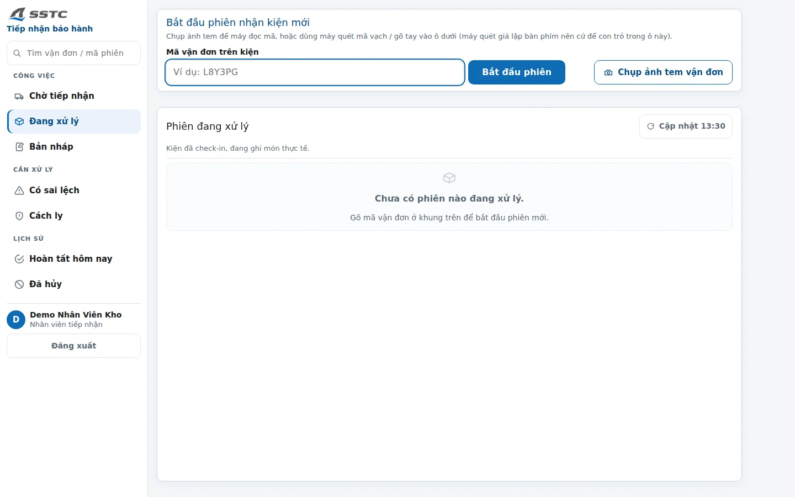

01BACKEND DEVELOPER INTERNSHIP
SSTCWarranty operations
A warranty process spanning customer intake, shipping, inspection and returns.
- My role
- Backend Developer Intern; sole developer from requirements and data design to testing and handover.
- Delivered
- A 29-state workflow and 57 schema migrations, with complete source handover.
- Key decision
- Backend-owned business rules; AI is limited to language extraction.
JAVA / SPRING BOOT / POSTGRESQL
Explore SSTC ↗